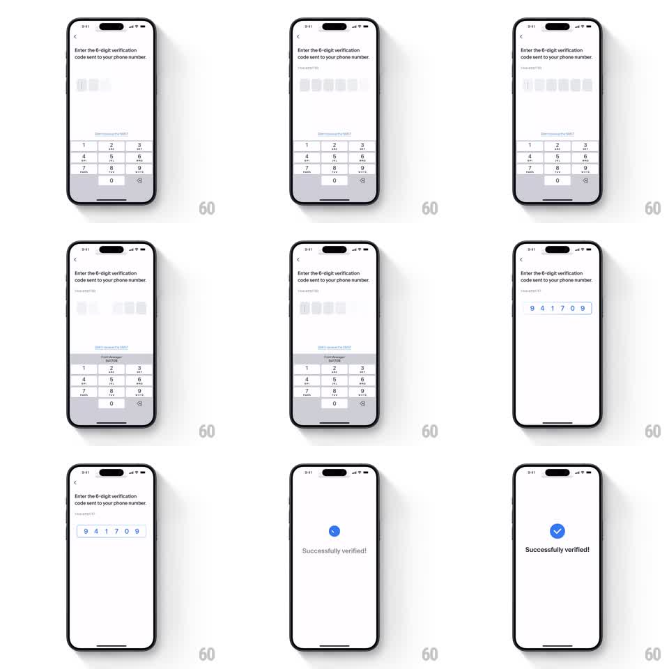

Media
Frame-by-frame

Rebuild this animation 1:1: Toss's OTP success - the six filled code boxes glide together into a single centered cluster, then collapse into a springy blue checkmark with "Successfully verified!".

Rebuild this animation 1:1: Toss's OTP success - the six filled code boxes glide together into a single centered cluster, then collapse into a springy blue checkmark with "Successfully verified!".
## Integration
Integration: stack-agnostic spec - springs given as stiffness/damping, timed motions as duration + curve; map every value to your framework and animation library of choice.
## Scene
Light screen: "Enter the 6-digit verification code sent to your phone number", six code boxes, numeric keypad, and an autofill suggestion ("From Messages 941709"). On completion the boxes hold "9 4 1 7 0 9", then the success sequence plays: boxes converge, a blue circle with a white check springs in, and "Successfully verified!" sits beneath.
## Motion spec
Pattern: converging code boxes collapsing into a success check.
- Autofill fills all six boxes at once (digits fade in, 150ms, left to right with 40ms stagger).
- On verify, the six boxes glide toward the row's center (300ms, ease-in-out), tightening their spacing until they read as one cluster.
- The cluster scales down and fades (200ms) as the blue check circle springs in at the same point (scale 0.3 -> 1.12 -> 1, spring ~300/14, 400ms); the white check draws inside (stroke, 200ms).
- "Successfully verified!" fades and rises below (250ms, 100ms after the check lands); the keypad slides away (300ms) during the convergence.
## Calibration
- The convergence is the trick: boxes move as individuals but arrive as one object - keep their internal alignment exact.
- The check inherits the cluster's center; no vertical jump between them.
## Reduced motion
Boxes fade out (200ms) as the check and label fade in, no convergence.
## Don't miss
- The blue is the same brand blue from the keypad's autofill pill.
- Success text is one short line, centered, regular weight - no confetti, no extra chrome.